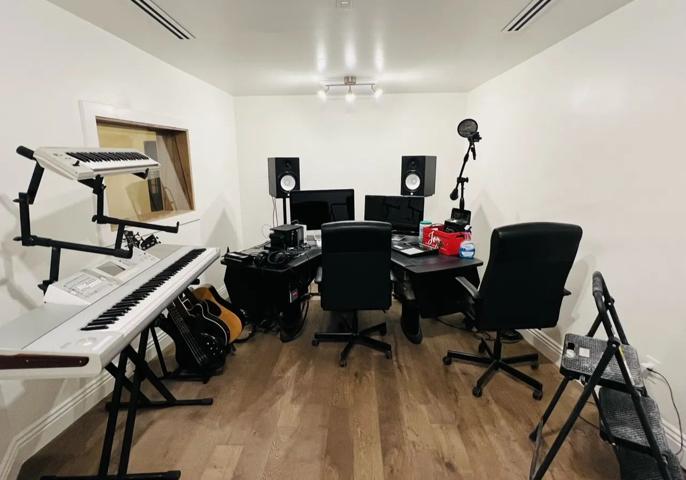

Where Sound Meets Soul
Experience professional mixing, mastering, and recording at The Pad Studio – a creative haven for artists of all levels.
References
- Images used from Facebook
- Fonts used from Google Fonts (Fira Sans, Roboto)
- Color inspiration: Coolors.co
- Icons: Font Awesome
- JavaScript references from course materials and MDN Web Docs